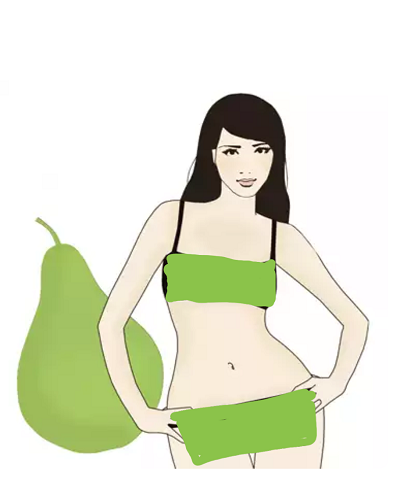

Armut: Eðer armut þeklinde bir vücuda sahipseniz, bunun anlamý kilonuz vücudunuzun alt kýsýmda toplanmýþ demektir. Bu durumda büyük olmayan göðüslere ve kývrýmlý
kalçalara sahip olma ihtimaliniz yüksektir. Bedeninizdeki en iyi kýsým ise ince bel ve kollarýnýz olabilir. Üst bedeninizde daha ince bir görünüme sahip olduðunuz için bütün dikkati
bu kýsma çekmeniz, çok daha iyi bir görünüme sahip olmanýzý saðlayacaktýr. A þeklindeki etekleri tercih ederek, kalça kývrýmlarýnýzý ve ince belinizi ortaya çýkarabilir, yüksek
topuklu ayakkabýlar giyerek bacaklarýnýzý daha ince ve uzun gösterebilir, belinize takacaðýnýz ince bir kemer ile ince olan belinizi daha da ince göstererek, 90-60-90 diye tabir
ettiðimiz, kum saati görünümüne sahip olabilirsiniz. Ayrýca dikkati üst bedene çekmek için göz alýcý bir küpe ve kolye size çok yakýþacaktýr. Daha net anlayabilmeniz için
ünlülerden Kim Kardashian, Eva Mendes ve Jennifer Lopez bu vücut þekline örnek olabilir.
Armut tipi vücutlu kadýnlar nasýl giyinmeli?
Armut tipi vücutlular için stil tüyolarý...
Dünya üzerindeki kadýnlarýn neredeyse %60'ý ince bir bele ve geniþ kalçalara sahip. Kýsaca 'armut' olarak adlandýrýlan bu vücut tipine göre giyinmek, aslýnda sanýldýðý kadar zor deðil. Doðru kýyafet seçimiyle armut tipi vücuda sahip olan Jennifer Lopez, Rihanna ve Beyonce gibi görünmek mümkün.
Armut tipi vücutlu kadýnlar neler giymeli, nelerden uzak durmalý? sorularýnýn cevaplarý ve stil tüyolarý bu yazýmýzda.
Ýþte armut tipi vücutlu kadýnlar için birkaç ipucu...
Bol kesim pantolonlar
Skinny jeanler ve dar pantolonlar yerine daha düz ve bol kesimli olanlarý tercih edin. Bu tip pantolonlar ile Jennifer Lopez gibi sofistike bir görüntü yakalabilirsiniz.
Koyu renklerden vazgeçmeyin
Daha ince gözükmek ve vücut kývrýmlarýnýzý saklamak için siyah gibi koyu renkler tercih etmelisiniz. Unutmayýn, koyu renkler armut tipi vücutlarýn en yakýn dostudur!
Gösteriþli kolyeler
Gösteriþli, bol taþlý ve süslü kolyeler ile bakýþlarý vücudunuzun üst kýsmýna çekebilir ve stilinize farklý bir hareket katabilirsiniz.
|